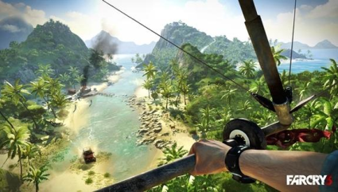
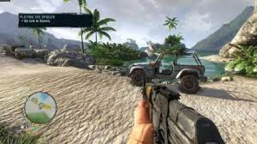

Descrição do jogo:
Far Cry 3 é um jogo de tiro em primeira pessoa de mundo aberto ambientado em uma ilha diferente de qualquer outra. Um lugar onde senhores da guerra fortemente armados traficam escravos. Onde forasteiros são caçados para resgate. E ao embarcar em uma busca desesperada para resgatar seus amigos, você percebe que a única maneira de escapar dessa escuridão... é abraçá-la.